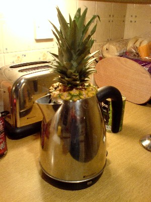

Q
X-Decoder
the toaster
LISA
the whole kettle
PISA · fine-tuned
just the handle
gIoU · InstructPart
LISA
32.1
best off-the-shelf model
PISA
76.2
2.4×
fine-tuned on InstructPart
Not the
object
,
but the
part
the task needs